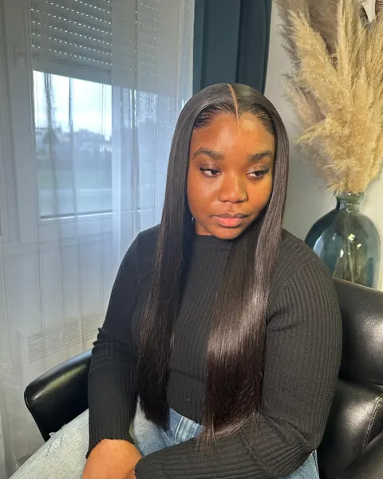
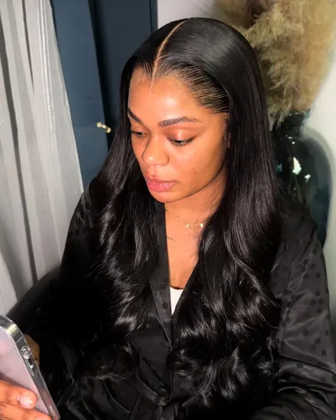

Pose closure
50 €
1 h 30
Pose d'une perruque closure confectionnée par Coiffure au Rendez-Vous : petite base en lace sur le dessus de la tête, pour une raie naturelle au milieu ou sur le côté.
RéserverCoiffeuse diplôméePrestation
Closure, lace frontal ou perruque que vous apportez : la pose est réalisée par une coiffeuse diplômée, de la préparation de vos cheveux jusqu'au styling final, pour un résultat naturel qui tient.



Tarifs
Tarifs et durées indicatives. Un acompte de 30 % confirme la réservation.
50 €
1 h 30
Pose d'une perruque closure confectionnée par Coiffure au Rendez-Vous : petite base en lace sur le dessus de la tête, pour une raie naturelle au milieu ou sur le côté.
Réserver60 €
2 h
Pose d'une perruque lace frontal confectionnée par Coiffure au Rendez-Vous : la lace suit votre ligne frontale d'une oreille à l'autre, pour une naissance de cheveux invisible.
Réserver80 €
2 h
Pose ou repose d'une perruque qui n'a pas été confectionnée par Coiffure au Rendez-Vous.
Perruque à déposer à l’institut 5 jours avant le rendez-vous.
Réserver180 €
2 h
Votre perruque lace frontal confectionnée à la machine par l'institut, personnalisée, puis posée et coiffée.
RéserverChoisir sa technique
Deux bases, deux résultats. Touchez une technique pour voir la zone qu'elle couvre.
Une petite base en lace posée sur le dessus de la tête, là où se trouve la raie. Discrète et rapide à poser, elle dessine une raie naturelle, au milieu ou sur le côté.
La lace suit toute la ligne frontale, d'une oreille à l'autre. Elle recrée une naissance de cheveux naturelle et permet de dégager le visage, de coiffer en arrière, de changer de raie.
La perruque se pose sur une base de nattes plates : vos cheveux restent protégés dessous, et la perruque se retire sans rien abîmer.
Bien choisir
Confectionnée par l'institut
Pour une pose de qualité, Coiffure au Rendez-Vous vous invite à choisir parmi ses mèches et perruques. La perruque est confectionnée à l'institut, puis posée : dès 50 €.
Découvrir la confectionVous apportez votre perruque
Pour la pose ou la repose d'une perruque qui n'a pas été confectionnée par l'institut, choisissez la « Pose wig extérieure » (80 €) et déposez votre perruque 5 jours avant le rendez-vous. Sans dépôt, le rendez-vous est annulé.
Quand déposer ma perruque ?
Le déroulé
Vos cheveux sont nattés à plat pour une base fine et régulière. Pas encore nattée ? Ajoutez les nattes sous perruque à votre rendez-vous.
La perruque est placée et ajustée à votre tête, puis la lace est découpée au ras de votre ligne frontale.
Nœuds blanchis, lace fondue : la naissance des cheveux devient invisible.
Lisse, wavy, boucles, raie au milieu ou sur le côté : la coiffure est finie selon l'allure que vous voulez.
FAQ
La closure couvre uniquement le dessus de la tête, là où se trouve la raie : elle est discrète et rapide à poser (1 h 30). La lace frontal suit toute la ligne frontale d'une oreille à l'autre : elle permet de dégager le visage, de coiffer en arrière et de changer de raie (2 h).
Oui, avec la prestation « Pose wig extérieure » (80 €, 2 h). La perruque doit être déposée à l'institut 5 jours avant le rendez-vous, sinon le rendez-vous est annulé.
Pas forcément : ajoutez la prestation « Nattes sous perruque » (20 €, 1 h) pour que la base soit réalisée à l'institut.
Démêlez-la des pointes vers les racines, dormez avec un foulard ou sur une taie en satin et limitez la chaleur. Pour lui redonner forme, réservez un brushing & styling (40 €).
Oui, 30 % du montant de la prestation, déduit du total le jour du rendez-vous. Il n'est pas remboursé en cas d'annulation.
Découvrir aussi
Choisissez votre prestation, indiquez la date souhaitée : votre demande part en un geste sur WhatsApp ou par SMS.